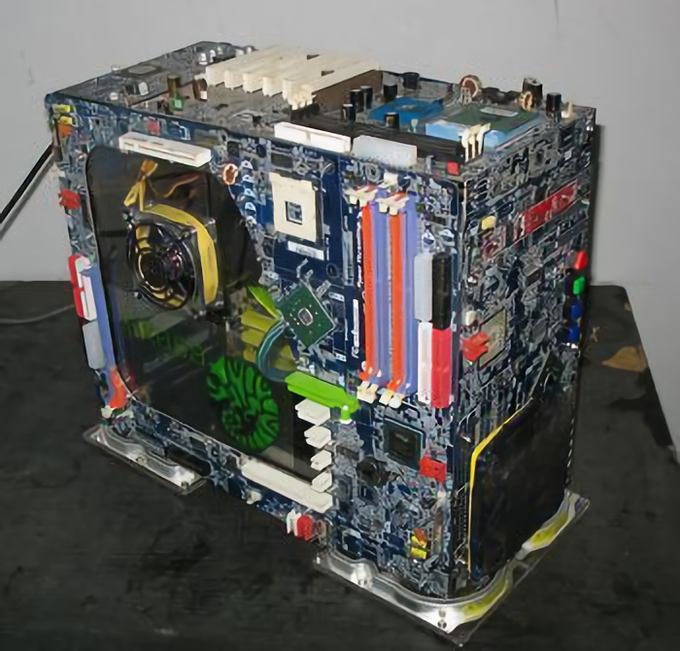
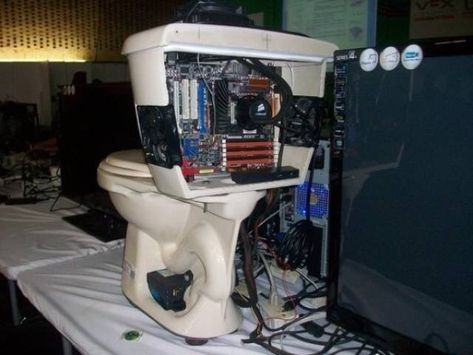

Tape Escape
Ancient geezer level gaming. This boy has been in the game for a long time. No doubt he manages the oldest distro you could ever imagine.
Placeholder
Easy Access
No extra steps needed. Only real DIYers will respect this setup. 100% available means 1000% easier.
Placeholder
Filthy
Deplorable filth of a linux user. We don't talk about these kind of users. Just know that when you smell strange things in your cs classes, it's probably these guys.